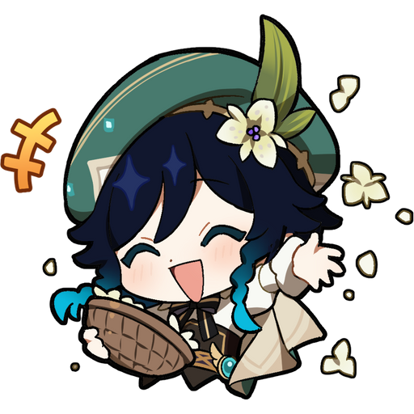
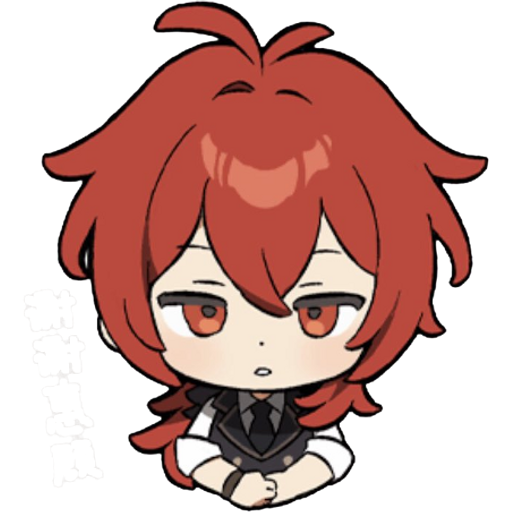

Mondstadt - The Nation of Freedom
Mondstadt, the city of open skies and wind-swept plains, is home to Barbatos, the Anemo Archon and God of Freedom. Its people value liberty above all, enjoying music, festivals, and self-expression without heavy governmental control.
Inspired by Germany and medieval Western Europe, Mondstadt is famous for its vineyards, breweries, and freedom-loving citizens.
The nation itself is often called the Nation of Freedom, reflecting its ideals.
Life here is peaceful, with gentle winds carrying the scent of the city's wine and the sound of music through the streets, creating a sense of liberation for travelers and locals alike.
Notable characters include Venti (the playful bard and Archon in disguise), Jean (the acting Grand Master of the Knights of Favonius), and Diluc (wealthy winery owner and vigilante).
-
Venti

Venti is the Anemo Archon and God of Freedom, who presides over the city of Mondstadt. Known for his freedom-loving nature, he appears as a wandering bard, but secretly holds the divine power to control wind. He is one of the original members of "The Seven," powerful deities who rule the world of Teyvat.
-
Jean
Jean Gunnhildr is an Anemo character and the Acting Grand Master of the Knights of Favonius. A swordswoman with a dedication to protecting the city of Mondstadt, she is also the older sister of Barbara.
-
Diluc

Diluc Ragnvindr is a Pyro character, known as the master of the Dawn Winery and the owner of the Angel's Share Tavern. He is a former member of the Knights of Favonius who left after a past incident, but continues to secretly protect Mondstadt as the "Darknight Hero".